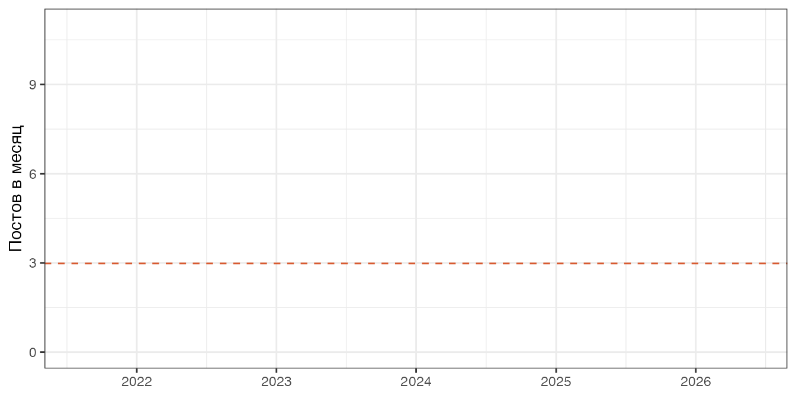
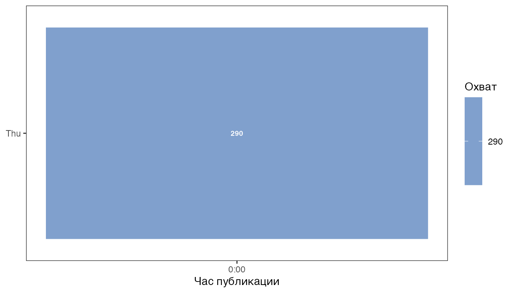
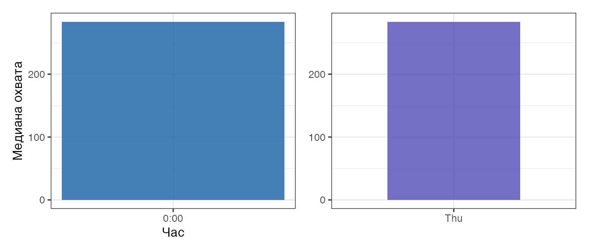
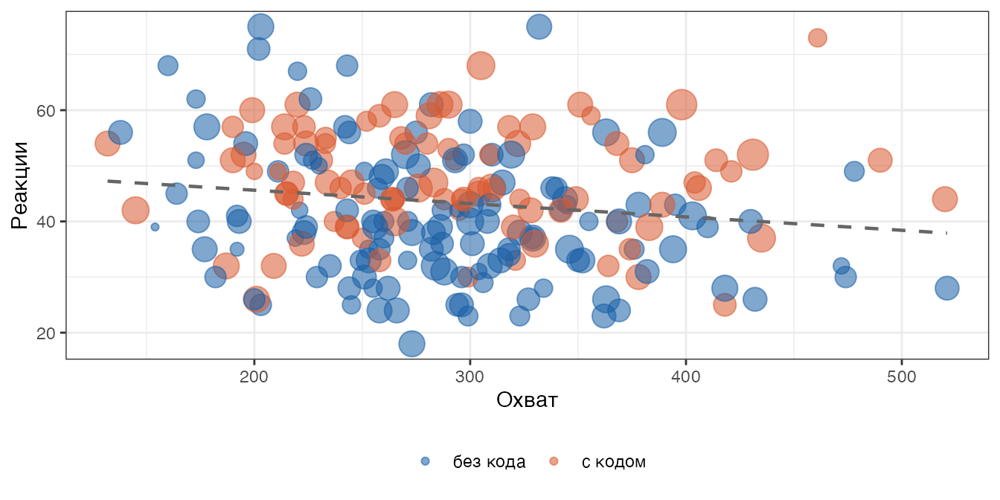
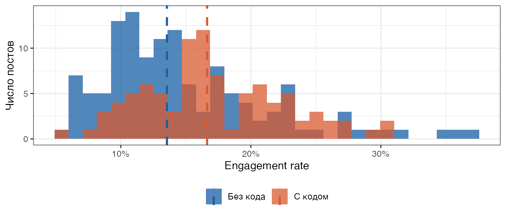
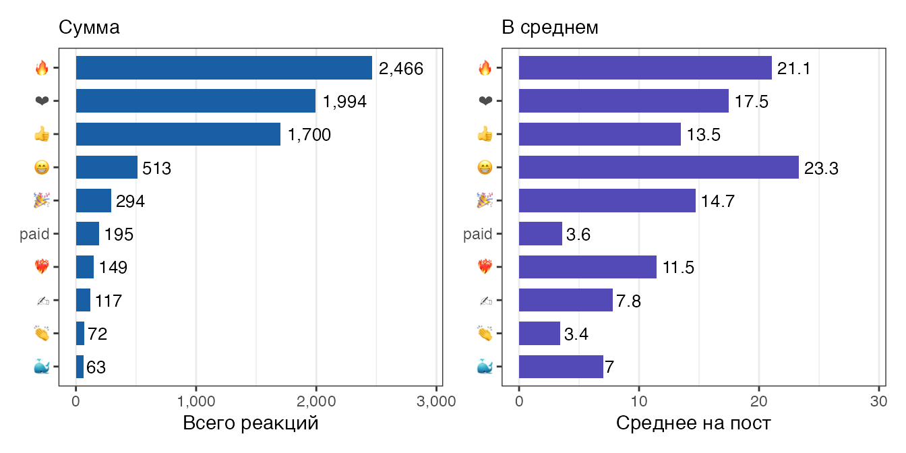
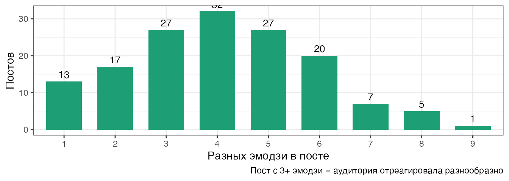
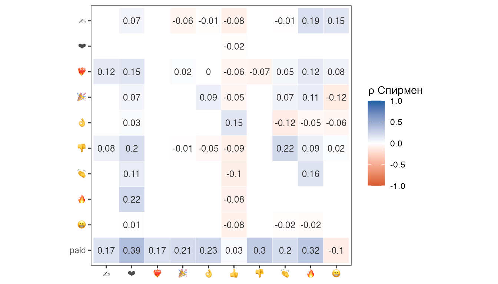
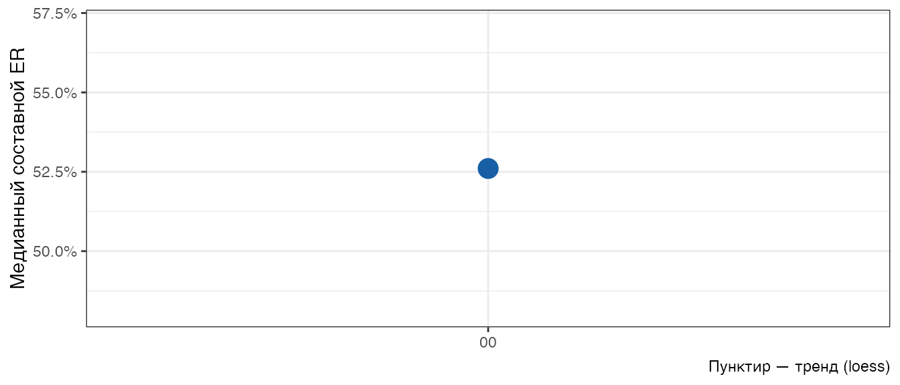

library(tidyverse)
library(lubridate)
library(jsonlite)
library(scales)
library(patchwork)
library(corrr)
library(ragg)
`%||%` <- function(x, y) if (is.null(x)) y else xTelegram-канал — это датасет. Каждый пост — строка: дата, охват, реакции, репосты. Эти данные можно скачать в один клик и проанализировать в R. Ниже — именно это.
Данные: откуда берём
Telegram Desktop → название канала → ⋮ → Export chat history
Формат: JSON, медиафайлы снять. Рядом с .qmd должен лежать result.json.
Note
Поле views доступно только в публичных каналах с включённой статистикой. Если его нет — анализ тайминга покажет симулированные данные, а реакции всё равно считаются из реального экспорта.
R-код
flatten_text <- function(x) {
if (is.null(x) || length(x) == 0) return(NA_character_)
if (is.character(x)) return(x)
parts <- map_chr(x, \(p) {
if (is.character(p)) p
else if (is.list(p) && !is.null(p$text)) p$text
else ""
})
str_c(parts, collapse = "")
}
extract_emoji <- function(r) {
tp <- r[["type"]] %||% ""
if (tp != "" && tp != "emoji") return(tp)
r[["emoji"]] %||% r[["value"]] %||% "?"
}
extract_comments <- function(m) {
rc <- m[["reply_count"]] %||%
{rp <- m[["replies"]]; if (is.list(rp)) rp[["count"]] else NULL} %||% 0L
as.integer(rc)
}
parse_msg_base <- function(m) {
if (!identical(m[["type"]], "message")) return(NULL)
tibble(
id = as.integer(m$id),
date = ymd_hms(m$date %||% NA_character_),
text = flatten_text(m$text),
views = as.integer(m$views %||% 0L),
forwards = as.integer(m$forwards %||% 0L),
comments = extract_comments(m),
has_code = {
ents <- m$text_entities %||% list()
any(map_chr(ents, \(e) e[["type"]] %||% "") %in% c("pre", "code"))
}
)
}
parse_reactions_long <- function(m) {
reacts <- m$reactions %||% list()
if (length(reacts) == 0) return(NULL)
map_dfr(reacts, \(r) tibble(
msg_id = as.integer(m$id),
date = ymd_hms(m$date %||% NA_character_),
emoji = extract_emoji(r),
count = as.integer(r[["count"]] %||% 0L)
))
}
read_tg_export <- function(path = "result.json") {
msgs <- read_json(path)$messages
list(
posts = map_dfr(msgs, parse_msg_base),
reacts = map_dfr(msgs, parse_reactions_long)
)
}# Загружаем данные: реальный экспорт или симуляция
if (file.exists("result.json")) {
dat_real <- read_tg_export("result.json")
has_views <- any(dat_real$posts$views > 0, na.rm = TRUE)
# Если в реальных данных нет охватов — берём симуляцию для тайминг-анализа
dat_sim <- if (!has_views) simulate_channel() else dat_real
use_real <- TRUE
message(if (has_views) "Реальный экспорт с охватами" else
"Реальный экспорт без охватов — тайминг из симуляции")
} else {
dat_real <- dat_sim <- simulate_channel()
has_views <- TRUE
use_real <- FALSE
message("result.json не найден — используем симуляцию")
}
# posts: из реальных данных (для реакций и текстовых метрик)
posts_raw <- dat_real$posts |> filter(!is.na(date))
# df: с охватами (для тайминга и ER) — может быть симуляция
df <- dat_sim$posts |>
filter(!is.na(date), views > 0) |>
mutate(
hour = hour(date),
weekday = wday(date, label = TRUE, abbr = TRUE, week_start = 1),
month = floor_date(date, "month"),
text_len = str_length(coalesce(text, ""))
)
# унифицируем колонку реакций (симуляция даёт total_reactions, парсер — reactions)
if (!"reactions" %in% names(df)) df <- df |> rename(reactions = total_reactions)
if (!"comments" %in% names(df)) df <- df |> mutate(comments = 0L)
df <- df |> mutate(er = reactions / views)
# reacts: длинный формат реакций из реального экспорта
reacts_raw <- dat_real$reacts
if (is.null(reacts_raw) || ncol(reacts_raw) == 0) {
reacts <- tibble(msg_id = integer(), date = as.POSIXct(NA)[-1],
emoji = character(), count = integer())
} else {
reacts <- reacts_raw |> filter(!is.na(date), count > 0)
}
# post_totals: суммарные реакции на пост
post_totals <- if (nrow(reacts) > 0) {
reacts |>
group_by(msg_id) |>
summarise(total_reactions = sum(count), n_emoji = n_distinct(emoji), .groups = "drop")
} else {
tibble(msg_id = integer(), total_reactions = integer(), n_emoji = integer())
}
# posts: объединяем базовые поля с агрегатами реакций
posts <- posts_raw |>
select(-any_of("total_reactions")) |>
left_join(post_totals, by = c("id" = "msg_id")) |>
mutate(
total_reactions = coalesce(total_reactions, 0L),
n_emoji = coalesce(n_emoji, 0L)
)Канал в цифрах
R-код
period <- paste0(
format(min(posts_raw$date, na.rm = TRUE), "%B %Y"), " — ",
format(max(posts_raw$date, na.rm = TRUE), "%B %Y")
)
tibble(
Показатель = c(
"Постов", "Период", "Постов с реакциями",
"Всего реакций", "Медиана реакций на пост",
"Постов с кодом", "Постов с комментариями"
),
Значение = c(
nrow(posts_raw),
period,
paste0(sum(posts$total_reactions > 0), " (",
percent(mean(posts$total_reactions > 0)), ")"),
comma(sum(posts$total_reactions)),
comma(median(posts$total_reactions[posts$total_reactions > 0])),
paste0(sum(posts_raw$has_code), " (",
percent(mean(posts_raw$has_code)), ")"),
paste0(sum(posts_raw$comments > 0), " (",
percent(mean(posts_raw$comments > 0)), ")")
)
) |>
knitr::kable(align = c("l", "r"))| Показатель | Значение |
|---|---|
| Постов | 167 |
| Период | August 2021 — June 2026 |
| Постов с реакциями | 149 (89%) |
| Всего реакций | 7,868 |
| Медиана реакций на пост | 44 |
| Постов с кодом | 36 (22%) |
| Постов с комментариями | 0 (0%) |
Рост канала
Частота и охват по месяцам — первый признак живого канала.
R-код
monthly <- df |>
group_by(month) |>
summarise(med_views = median(views), avg_views = mean(views),
n_posts = n(), .groups = "drop")
if (has_views && use_real) {
ggplot(monthly, aes(x = month)) +
geom_ribbon(aes(ymin = med_views, ymax = avg_views),
fill = "#185FA5", alpha = .12) +
geom_line(aes(y = avg_views), colour = "#185FA5",
linewidth = .9, linetype = "dashed") +
geom_line(aes(y = med_views), colour = "#185FA5", linewidth = 1.2) +
geom_point(aes(y = med_views, size = n_posts), colour = "#185FA5") +
scale_y_continuous(labels = comma) +
scale_size_continuous(range = c(2, 6)) +
labs(x = NULL, y = "Охват", size = "Постов",
caption = "Сплошная — медиана, пунктир — среднее") +
theme_bw() + theme(legend.position = "bottom")
} else {
# Для реальных данных без охватов — показываем частоту публикаций
posts_raw |>
mutate(month = floor_date(date, "month")) |>
count(month) |>
ggplot(aes(x = month, y = n)) +
geom_col(fill = "#185FA5", alpha = .8, width = 25) +
geom_hline(aes(yintercept = mean(n)), linetype = "dashed", colour = "#D85A30") +
labs(x = NULL, y = "Постов в месяц") +
theme_bw()
}
Когда постить?
R-код
hm <- df |>
group_by(weekday, hour) |>
summarise(avg_views = mean(views), n = n(), .groups = "drop")
ggplot(hm, aes(x = hour, y = fct_rev(weekday), fill = avg_views)) +
geom_tile(colour = "white", linewidth = .6) +
geom_text(data = filter(hm, n >= 3),
aes(label = comma(avg_views, accuracy = 1)),
size = 2.6, colour = "white", fontface = "bold") +
scale_fill_gradient(low = "#d0e8f5", high = "#185FA5",
labels = comma, na.value = "grey90") +
scale_x_continuous(breaks = seq(0, 23, 3),
labels = \(x) paste0(x, ":00")) +
labs(x = "Час публикации", y = NULL, fill = "Охват") +
theme_bw() + theme(panel.grid = element_blank())
R-код
p_hour <- df |>
group_by(hour) |>
summarise(med = median(views), n = n()) |>
ggplot(aes(x = hour, y = med)) +
geom_col(fill = "#185FA5", alpha = .8, width = .85) +
scale_x_continuous(breaks = seq(0, 23, 3),
labels = \(x) paste0(x, ":00")) +
scale_y_continuous(labels = comma) +
labs(x = "Час", y = "Медиана охвата") +
theme_bw()
p_wd <- df |>
group_by(weekday) |>
summarise(med = median(views)) |>
ggplot(aes(x = weekday, y = med)) +
geom_col(fill = "#534AB7", alpha = .8, width = .65) +
scale_y_continuous(labels = comma) +
labs(x = NULL, y = NULL) +
theme_bw()
p_hour | p_wd
Что залетает?
Охват — это сколько людей увидели. Реакции — сколько почувствовали.
R-код
df |>
ggplot(aes(x = views, y = reactions,
colour = has_code, size = forwards + 1)) +
geom_point(alpha = .55) +
scale_colour_manual(values = c("TRUE" = "#D85A30", "FALSE" = "#185FA5"),
labels = c("TRUE" = "с кодом", "FALSE" = "без кода")) +
scale_x_continuous(labels = comma) +
scale_size_continuous(range = c(1.5, 7), guide = "none") +
geom_smooth(aes(group = 1), method = "lm", se = FALSE,
colour = "grey40", linewidth = .8, linetype = "dashed") +
labs(x = "Охват", y = "Реакции", colour = NULL) +
theme_bw() + theme(legend.position = "bottom")
R-код
df |>
filter(er < quantile(er, .99, na.rm = TRUE)) |>
mutate(type = if_else(has_code, "С кодом", "Без кода")) |>
ggplot(aes(x = er, fill = type)) +
geom_histogram(bins = 30, alpha = .75, position = "identity") +
geom_vline(
data = df |>
mutate(type = if_else(has_code, "С кодом", "Без кода")) |>
group_by(type) |>
summarise(med = median(er, na.rm = TRUE)),
aes(xintercept = med, colour = type),
linetype = "dashed", linewidth = 1
) +
scale_fill_manual(values = c("С кодом" = "#D85A30", "Без кода" = "#185FA5")) +
scale_colour_manual(values = c("С кодом" = "#D85A30", "Без кода" = "#185FA5")) +
scale_x_continuous(labels = percent) +
labs(x = "Engagement rate", y = "Число постов", fill = NULL, colour = NULL) +
theme_bw() + theme(legend.position = "bottom")
Как читатели реагируют
Лайк и огонь — разные вещи. Разберём, чем именно отвечает аудитория.
R-код
if (nrow(reacts) > 0) {
emoji_summary <- reacts |>
group_by(emoji) |>
summarise(total = sum(count), posts = n_distinct(msg_id),
avg = total / posts, .groups = "drop") |>
slice_max(total, n = 10) |>
mutate(emoji = fct_reorder(emoji, total))
p1 <- ggplot(emoji_summary, aes(x = total, y = emoji)) +
geom_col(fill = "#185FA5", width = .7) +
geom_text(aes(label = comma(total)), hjust = -.15, size = 3.5) +
scale_x_continuous(labels = comma,
limits = c(0, max(emoji_summary$total) * 1.18)) +
labs(x = "Всего реакций", y = NULL, subtitle = "Сумма") +
theme_bw() + theme(panel.grid.major.y = element_blank())
p2 <- ggplot(emoji_summary, aes(x = avg, y = emoji)) +
geom_col(fill = "#534AB7", width = .7) +
geom_text(aes(label = round(avg, 1)), hjust = -.15, size = 3.5) +
scale_x_continuous(limits = c(0, max(emoji_summary$avg) * 1.25)) +
labs(x = "Среднее на пост", y = NULL, subtitle = "В среднем") +
theme_bw() + theme(panel.grid.major.y = element_blank())
p1 | p2
} else {
cat("> Реакции в экспорте не найдены.")
}
Note
Реакция paid — это платные звёздочки ⭐ Telegram. У неё нет иконки-эмодзи в экспорте, только тип "paid".
R-код
if (nrow(posts |> filter(total_reactions > 0)) > 0) {
posts |>
filter(total_reactions > 0) |>
count(n_emoji) |>
ggplot(aes(x = factor(n_emoji), y = n)) +
geom_col(fill = "#1D9E75", width = .7) +
geom_text(aes(label = n), vjust = -.5, size = 3.5) +
labs(x = "Разных эмодзи в посте", y = "Постов",
caption = "Пост с 3+ эмодзи = аудитория отреагировала разнообразно") +
theme_bw()
}
Какие эмодзи ставят вместе?
R-код
if (nrow(reacts) > 0) {
react_wide <- reacts |>
group_by(msg_id, emoji) |>
summarise(count = sum(count), .groups = "drop") |>
pivot_wider(id_cols = msg_id, names_from = emoji,
values_from = count, values_fill = 0L)
min_posts <- nrow(react_wide) * .08
keep_emoji <- react_wide |>
summarise(across(-msg_id, \(x) sum(x > 0))) |>
pivot_longer(everything()) |>
filter(value >= min_posts) |>
pull(name)
if (length(keep_emoji) >= 3) {
cor_long <- react_wide |>
select(all_of(keep_emoji)) |>
correlate(method = "spearman", quiet = TRUE) |>
shave() |>
pivot_longer(-term, names_to = "emoji2", values_to = "r") |>
filter(!is.na(r))
ggplot(cor_long, aes(x = emoji2, y = fct_rev(term), fill = r)) +
geom_tile(colour = "white") +
geom_text(aes(label = round(r, 2)), size = 3.2, colour = "grey20") +
scale_fill_gradient2(low = "#D85A30", mid = "white", high = "#185FA5",
midpoint = 0, limits = c(-1, 1), name = "ρ Спирмен") +
coord_equal() +
labs(x = NULL, y = NULL) +
theme_bw() + theme(panel.grid = element_blank())
}
}
Комментарии: самый дорогой сигнал
Лайк стоит одно касание. Комментарий — минуту времени и желание вступить в диалог.
R-код
has_comments <- sum(posts_raw$comments > 0, na.rm = TRUE)
if (has_comments > 5) {
ggplot(posts_raw, aes(x = comments)) +
geom_histogram(binwidth = 1, fill = "#1D9E75", colour = "white", alpha = .85) +
geom_vline(xintercept = median(posts_raw$comments[posts_raw$comments > 0]),
linetype = "dashed", colour = "#D85A30") +
scale_x_continuous(breaks = scales::pretty_breaks()) +
labs(x = "Комментариев", y = "Постов",
caption = paste0(has_comments, " постов из ", nrow(posts_raw),
" (", percent(has_comments / nrow(posts_raw)),
") имеют хотя бы один комментарий")) +
theme_bw()
} else {
cat("> Данные о комментариях недоступны.\n",
"> Привяжи группу обсуждений к каналу в настройках Telegram.")
}> Данные о комментариях недоступны.
> Привяжи группу обсуждений к каналу в настройках Telegram.R-код
if (has_comments > 0) {
posts |>
filter(comments > 0) |>
slice_max(comments, n = 10) |>
transmute(
Дата = format(date, "%d.%m.%Y"),
Реакции = comma(total_reactions),
Комментарии = comments,
Репосты = forwards,
Код = if_else(has_code, "✓", "")
) |>
knitr::kable(caption = "Топ-10 постов по числу комментариев")
}Составной ER: взвешенная вовлечённость
Реакция, репост и комментарий — разный вес. Взвешиваем:
\[\text{ER}_{\text{composite}} = \frac{\text{реакции} + 5 \times \text{репосты} + 10 \times \text{комментарии}}{\text{охват}}\]
R-код
df_er <- df |>
mutate(
er_composite = if_else(views > 0,
(reactions + 5 * forwards + 10 * coalesce(as.integer(comments), 0L)) / views,
NA_real_)
) |>
filter(!is.na(er_composite))
if (nrow(df_er) > 0) {
df_er |>
mutate(month = floor_date(date, "month")) |>
group_by(month) |>
summarise(med_er = median(er_composite), n = n(), .groups = "drop") |>
ggplot(aes(x = month)) +
geom_line(aes(y = med_er), colour = "#185FA5", linewidth = 1.1) +
geom_point(aes(y = med_er, size = n), colour = "#185FA5") +
geom_smooth(aes(y = med_er), method = "loess", se = FALSE,
colour = "#D85A30", linetype = "dashed", linewidth = .8) +
scale_y_continuous(labels = percent) +
scale_size_continuous(range = c(2, 6), guide = "none") +
labs(x = NULL, y = "Медианный составной ER",
caption = "Пунктир — тренд (loess)") +
theme_bw()
}
Топ постов
R-код
posts |>
filter(total_reactions > 0) |>
slice_max(total_reactions, n = 10) |>
transmute(
Дата = format(date, "%d.%m.%Y"),
Реакции = comma(total_reactions),
Репосты = forwards,
Комментарии = comments,
Эмодзи = n_emoji,
Код = if_else(has_code, "✓", ""),
Текст = str_trunc(coalesce(text, "[медиа]"), 60)
) |>
knitr::kable(caption = "Топ-10 постов по реакциям")| Дата | Реакции | Репосты | Комментарии | Эмодзи | Код | Текст |
|---|---|---|---|---|---|---|
| 24.11.2024 | 183 | 0 | 0 | 6 | Долгожданный разбор теста Велча и сравнение с тестом Стью… | |
| 18.12.2023 | 168 | 0 | 0 | 7 | Один статистик 40 лет проработал в самой успешной биотех … | |
| 14.02.2025 | 163 | 0 | 0 | 7 | Долгожданный разбор курса “Основы статистики” на степике | |
| … | ||||||
| 01.04.2026 | 155 | 0 | 0 | 7 | 🎲 Какая вероятность встретить динозавра на улице? | |
| 50/50:… | ||||||
| 09.07.2024 | 146 | 0 | 0 | 5 | ✓ | Новый курс по tidyverse 📈 на stepik |
В начале мая мы совм… | |30.08.2024 |133 | 0| 0| 4| |С днем рождения меня 🎈
И почти с днем рождения телеграм-… | |07.08.2025 |123 | 0| 0| 6| |Загадка (все события вымышленны, любое совпадение случайн… | |31.10.2025 |110 | 0| 0| 8|✓ |R или Python в аналитике?
Наконец-то решила написать про… | |08.05.2024 |105 | 0| 0| 4|✓ |Пост-знакомство с Еленой, создательницей и ведущей этого … | |31.07.2024 |104 | 0| 0| 4| |Всем привет!
Написала обещанный большой пост о моем пер… |
Что говорят реакции
| Эмодзи | Что говорит читатель | Тип контента |
|---|---|---|
| 👍 | Одобряю, полезно | Базовый сигнал, везде |
| ❤️ | Люблю этот контент | Личный стиль, серии |
| 🔥 | Горячо, хочу ещё | Практические туториалы |
| 🤯 | Не ожидал, сломал мозг | Симуляции, парадоксы |
| 🤓 | Нердово, но мне нравится | Математика, теория |
| 👏 | Хорошая работа | Разборы, лонгриды |
| ⭐ | Платная поддержка | Любой контент |
| 😁 | Весело | Лёгкий контент |
TipТри вопроса, которые стоит задать своему каналу
- Мало 🔥? Значит, мало практически применимого контента.
- Мало 🤯? Значит, мало контринтуитивного — того, что удивляет.
- Мало комментариев? Попробуй заканчивать посты вопросом.